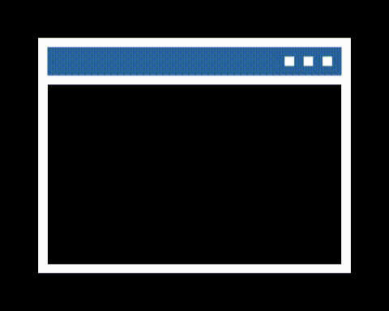

Lucas Moraes
Desenvolvedor FrontEnd Junior
- 
Sobre
Olá! Meu nome é Lucas Moraes, seja bem vindo(a)!
Sou um grande admirador da área e tenho me dedicado cada vez mais a conhecer as tecnologias e desafios desse mundo dos códigos. Acredito que a chave para se resolver a maior parte dos problemas é a dedicação e insistência na resolução, as quais posso dizer que tenho como características. Atualmente estudo tecnologias com foco em web (HTML, Javascript, PHP e CSS). No dia a dia gosto bastante de assistir a conteúdos do Youtube, principalmente sobre conhecimentos científicos e políticos, além de assistir a filmes e séries em stream.